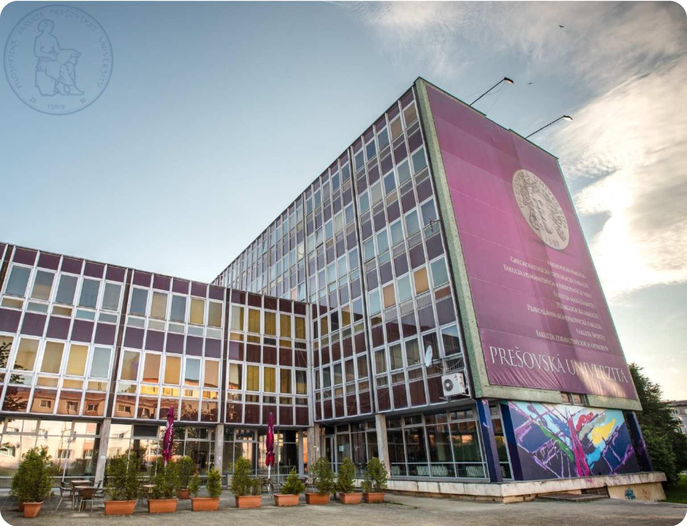
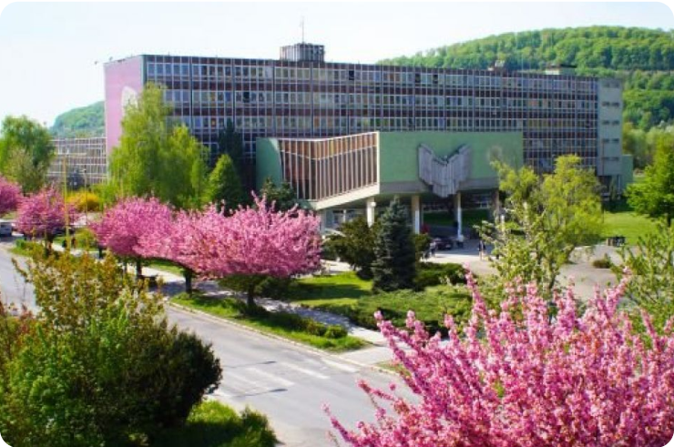
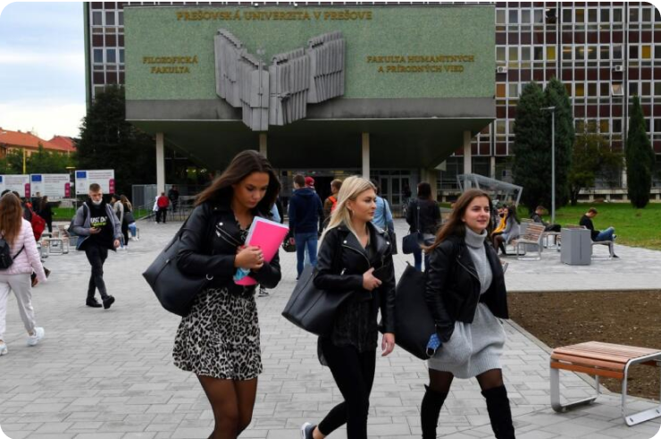

Моє ім’я Євген Дубенко і я засновник освітньої агенції «Educate Agency» — №1 в Україні за кількістю
абітурієнтів, які стали студентами ВНЗ в країнах ЄС з нашою допомогою.
В цьому матеріалі ще до старту онлайн вебінару, на який ви зареєструвались і в етері
якого я на вас
обов'язково чекатиму, я розповім вам деякі важливі деталі про вступ до ВНЗ, навчання
та життя в Словаччині,
які вам не дуже захочуть розкривати або просто не знатимуть про них в інших освітніх агенціях
Що таке стратегія побудови кар’єри в Європі і чому варто з неї починати
Як обрати університет та визначити спеціальність, яка підійде саме вам
Як отримувати стипендію від 300 € до 1000 €
Як потрапити в класний державний гуртожиток
Як влаштувати побут та жити цікавим студентським життям
Які витрати планувати на вступну кампанію
Покроковий план дій для гарантованого вступу на бюджет до
ВНЗ Словаччини
Зрозуміло, що на вебінарі ми більш детально зупинимось на цих та інших важливих темах, які будуть
актуальними для вас на шляху до вступу до ВНЗ Словаччини та успішного навчання…
А зараз ми закладемо необхідний базис, щоб ви вже могли краще розуміти, як насправді відбувається
підготовка до вступу до ВНЗ Словаччини та позбутись хибних уявлень та міфів про вступ до
університету та
навчання за кордоном, які блукають теренами інтернету.
Маршрутна карта буде однаково корисною як для абітурієнтів, так і для їх батьків, отже, в
деяких його
частинах я буду звертатись до кожного з вас окремо 😉
Тому, будь ласка, приділіть 10-15 хвилин свого часу та дуже уважно зануртесь у зміст кожного абзацу цієї
маршрутної карти.
1
Почну знайомити вас з маршрутом до вступу та навчання за кордоном з дуже
показової історії
Багато років тому я сам навчався у ВНЗ в Словаччині…
і ледве не втратив цілий навчальний рік…
❌ через помилку освітньої агенції, яка мені готувала документи…
Після закінчення бакалаврату факультету прикладної математики в Ужгородському Національному
Університеті
(УжНУ) я розглядав різні варіанти продовження навчання за кордоном — і в Чехії, і в Польщі, і в
Словаччині…
Доречі, якби я одразу після 11 класу вступив до ВНЗ Словаччини, то я би отримав диплом
бакалавра за 3
роки, а не за 4, тому що в Словаччині на бакалавра вчаться саме 3 роки, та про це розповім далі.
Для мене на той момент стояло кілька важливих критеріїв у виборі країни та університету:
Швидка мовна адаптація (не розглядав Німеччину, Францію і т.д.)
Не надто висока вартість проживання в обраній країні
Престижний диплом міжнародного зразка
Вступ до ВНЗ за кордоном обов’язково на бюджет
Вивчивши питання, мені стало очевидно, що варіант із Польщею буде складнішим в контексті саме
процедури
вступу на бюджет.
На жаль, більшість університетів в Польщі виділяють дуже мало бюджетних місць, а на платній основі
навчальний рік коштує від 900 €, а по тим напрямкам, які мені були цікаві, зараз за навчальний
рік
потрібно заплатити 1600-2000 €.
Тобто тільки оплата за навчання студента в Польщі в престижному ВНЗ на хорошому
факультеті складатиме 4000-7000 € за період від вступу до отримання диплому бакалавра.
Мій фокус змістився на Чехію та Словаччину — мені сподобалось, що є набагато реальніша
можливість
вступити на бюджет в цих країнах.
Рухаємось далі — що з мовою?
Для початку вступної кампанії в Чехії абітурієнт має 1 рік вивчати чеську мову на курсах, які
проходять
виключно на території країни. Так, рік потрібно жити в Чехії та вивчати мову, потім скласти іспит та
отримати відповідний сертифікат і вже тоді подавати документи на вступ до ВНЗ.
життя в Чехії приблизно в 1,5-2 рази дорожче ніж в
Словаччині
державних гуртожитків майже немає і студенту потрібно жити в приватному, що
в 4-5 разів дорожче, ніж в державному в Словаччині
для вступу на багато спеціальностей потрібно здавати іспити*
* не завжди іспити кваліфікуються як вступні — іспити можуть стосуватись
підтвердження знань абітурієнта з конкретних дисциплін шкільної програми, по яким була начитка в
українській школі менше годин, ніж по офіційній шкільній програмі в Чехії, як для прикладу предмет
географії — про такі та інші подробиці більше на вебінарі зможете дізнатись.
⛔ ️Стоп!
Тут у вас може скластись враження, що Чехія — це поганий варіант для вступу до ВНЗ…
Насправді це не так!
У нас є багато студентів в Чехії зараз і я особисто дуже люблю туди приїздити і це реально хороший
варіант для навчання у ВНЗ в ЄС…
Так, цей варіант дійсно відчутно дорожчий, мова трішечки складніша ніж словацька…
Отож, ви вільні обирати, що подобається саме вам і приймати відповідні рішення, а ми зможемо допомогти вам
правильно підготуватись та вступити до ВНЗ Чехії на бюджет, якщо ви оберете цю країну — тут я звертаюсь як
до майбутніх студентів, так і до їх батьків, адже дуже добре розумію за 8 років роботи нашої агенції, що
вступна кампанія — часто однаково емоційно напружений період для кожного з вас.

Але тоді мій особистий вибір припав на Словаччину через:
можливість вступити на бюджет на ту спеціальність, яка мені була цікава, а
це був факультет Менеджменту в Пряшівському Університеті
менше фінансове навантаження в рамках проживання та побутових витрат
близькість до кордону з Україною, а я родом з Ужгорода, та відносну легкість вивчення мови
2
Як відбувався мій вступ до ВНЗ Словаччини і як я ледь не втратив цілий
рік
навчання?
Я звернувся до освітньої агенції та надав інформацію про університет та
факультет до якого я хочу вступити
Агенція надіслала мені список необхідних з моєї сторони документів — я їх
підготовував заздалегідь та передав в агенцію
3,5 місяці вивчав Словацьку мову у мовній школі в Україні за дуже доступною
вартістю
Агенція мені повідомила, що все гаразд і що я зарахований
Наче все добре і вже зараз настане “Happy End” і підуть титри…


Я з великим натхненням приїхав до Пряшева, облаштував свій побут та почав готуватись до старту
навчального
року…
В кінці вересня я приходжу на першу пару (саме тоді починається навчальний рік у ВНЗ Словаччини),
а в списках мене немає…
“Це якась помилка?”
“Ні, це велика проблема!”
Як так могло статись, що мене немає у списках?
Насправді це був просто шок…😮
Освітня агенція, до якої я тоді звертався, дійсно підготувала та подала документи в Пряшівський
Університет на факультет Менеджменту та зробила багато організаційної роботи…
Але з невідомих мені причин агенція не зробила мені Нострифікацію — офіційне підтвердження в
Словаччині
моїх документів про мою попередню освіту в Україні!
В моєму випадку потрібно було підтвердити мій диплом бакалавра факультету прикладної математики в УжНУ, у
випадку вступу після 11 класу — це ваш шкільний атестат.
І склалось так, що всі мої документи лежали в університеті, але офіційно я НЕ БУВ зарахований через
відсутність Нострифікації…
З кінця вересня до кінця листопада я перед кожною парою пояснював викладачам цю ситуацію і тільки
через
свій талант комунікації мав змогу бути присутнім на більшості лекцій…
В університеті чекали на мою Нострифікацію…
Але, забігаючи наперед, її в тому семестрі мені так і не зробили і представники агенції взагалі перестали
контактувати зі мною…
В кінці листопада, тобто за 2 місяці після початку навчального семестру, мені у деканаті сказали:
“все, ми
більше чекати не можемо — вам заборонено відвідувати лекції”.
І ще добре, що я був уже трохи у старшому віці і почав шукати різні рішення, але страшно уявити, що може
відчувати студент першого курсу та його батьки, якщо станеться такий казус?
Уявіть — студент там на місці, тільки почав адаптуватись, а батьки далеко в
Україні — не найприємніший варіант розвитку подій…
Отже, через таку недбалість з боку освітньої агенції я мав би вилетіти з університету та втратити
рік.
Так реально відбувається у 99% ситуацій.
І тільки щасливий випадок, про який більше розкажу на вебінарі, допоміг мені не бути негайно
відрахованим
— але мене перевели на авіаційний факультет по управлінню повітряним транспортом — наче теж менеджмент,
але управління не бізнесом, а організацією польотів літаків — гадаю, що ви розумієте, що це зовсім різні
професії…
Отже, на щастя я цілий рік не втратив, але у 99% випадків студент втрачає свій навчальний рік через такі
прикрі помилки деяких освітніх агенцій.
І саме тоді, переживши кілька місяців цього стресу, у мене вперше з’явилась мрія створити освітню
агенцію,
менеджери та куратори якої ніколи не будуть припускатись таких прикрих помилок — як ви вже зрозуміли, що
моя мрія здійснилась.
Отже, наразі в ході розповіді моєї історії ви отримали базову інформацію про критерії вибору країни
для
навчання та деякі деталі, на які обов’язково потрібно звертати увагу при підготовці до вступної
кампанії.
А тепер давайте проведу для вас короткий екскурс в сам шлях
підготовки та вступу до
ВНЗ та розповім ще ряд важливих речей, які вам необхідно знати
Більш детально будемо це обговорювати на вебінарі, але прямо зараз у вас зміниться уявлення взагалі
про
те, що таке насправді підготовка до вступу до ВНЗ за кордоном
3
Що таке стратегія побудови кар’єри в Європі?
Хочу спочатку звернутись з вашого дозволу до вас, батьки…
Згадайте, будь ласка, ваш хід думок стосовно навчання вашої дитини у ВНЗ за кордоном та майбутнього
вашої дитини.
Чи знайомий вам внутрішній діалог приблизно в наступних контекстах?
“Аби тільки моя дитина вступила у ВНЗ за кордоном та отримала офіційний дозвіл на
проживання в ЄС”
“Не так важливо куди вступати за кордоном — головне, щоб на бюджет, а там вже якось
буде”
“У моєї дитини одні 3, 5, 7 по 12-бальній в школі — яке навчання чи кар'єра в Європі?”
“У нас все погано з іноземними мовами і навряд чи моя дитина зможе вивчити словацьку, і
взагалі навіть якщо вступимо до ВНЗ за кордон без ЗНО, то вилетимо на першій же сесії”
“Моя дитина — це ж ще просто дитина, яка не вміє самостійно готувати обід та вирішувати побутові
моменти — як вона зможе жити сама в іншій країні і як взагалі зараз можна визначитись ким вона
хоче стати і до чого у неї є хист?”
“Кому там потрібні зараз наші студенти і потім працівники? Максимум збирати полуницю на
полях вони нам можуть дати у себе за півціни”
За 8 років роботи нашої агенції я знаю, що багато батьків недооцінюють:
важливість вибору вірного напрямку навчання, факультету та університету
для вступу вже зараз
потенціал своєї дитини і можуть не вірити, що їхня дитина може стати
успішною, самореалізованою та щасливою в житті, хоча усім сердцем їй цього бажають
можливості, які відкриваються перед їхньою дитиною в процесі та після
навчання за кордоном
Після того, як через нашу агенцію пройшло 1600+ абітурієнтів, які стали студентами різних
університетів
країн ЄС, можу стверджувати, що у 90 % випадках ті чи інші схожі думки у батьків присутні, і це нормально…
Якщо у вас таких думок ніколи не було і ви прискіпливо ставитесь до побудови кар’єри вашої дитини і
впевнені у її потенціалі і можливості досягти великих успіхів в житті — це дуже позитивно.
В тому чи іншому випадку — зараз, будь ласка, будьте дуже уважні до тих думок, якими з вами поділюсь
нижче
Чому у голівудських фільмах ми часто можемо бачити підхід зазвичай більш статусних
батьків до планування навчання та кар'єри їхніх дітей?
Чи виглядає це дивним для нас?
Можливо для когось так, але в більшості ми це сприймаємо як НОРМАЛЬНИЙ стан речей — що так і має
бути,
коли випускники визначаються зі своїм покликанням, а батьки усіми можливими засобами сприяють
реалізації
намірів своїх дітей.
Але коли після перегляду фільму ми повертаємось до “реального” життя, то чомусь багато хто не
сприймає
це
як “інструкцію до дії”, хоча варто було би як мінімум розглянути такий підхід до планування
майбутнього
дитини.
І ми можемо багато і небезпідставно аргументувати це тим, що у нас зовсім інша країна, зовсім інший
рівень
життя, доходів, фінансових заощаджень, менталітету — і в деякій мірі будемо праві…
Але що якщо подивитись на це питання з протилежної сторони та уявити, що саме ви можете прямо зараз
закласти без перебільшення доленосний фундамент для майбутнього вашої дитини незалежно від рівня
ваших
доходів та соціального статусу?
На багатьох кейсах наших студентів я бачу, що такий підхід реально працює, коли
випускник зі звичайної української сім’ї вступає до ВНЗ в Словаччині, проходить оплачувану практику в
Австрії і потім його запрошують працювати в Іспанію, а його щомісяний дохід вище, ніж у місцевих іспанців…
Більше таких кейсів будемо розкривати на вебінарі — обов’язково будьте присутніми.
Отже, такий підхід до стратегії побудови кар’єри випускника працює і ось чому:
1Давайте почнемо з наступного твердження:
Навчаючись за кордоном Ваша дитина може стати будь ким!
Умовно кажучи, ваша дитина може стати:
пілотом авіалайнера
художником
пластичним хірургом
архітектором
ІТвцем
менеджером
інженером
перекладачем
філологом
соціальним працівником
пілотом авіалайнера
художником
пластичним хірургом
офіцером поліції
адвокатом
політиком
лікарем
ветеринаром
модним дизайнером
дизайнером інтер’єрів
викладачем
математиком
науковецем
біологом
екологом
і ще сотні інших професій, деякі з яких вважаються не дуже престижними, з незрозумілими перспективами
працевлаштування або низько оплачуваними в Україні…
Але якщо ЄС фінансує навчання на бюджеті визначеної кількості студентів в кокнретних
університетах на
конкретних факультетах — це означає, що державний апарат та різні галузі економіки потребують
фахівців
з цих професій. В Європі підходять до цих питань стратегічно та прагматично і не вкладають гроші
в
безперспективні напрямки.
І що найголовніше, що випускник майже будь-якого факультету будь-якої спеціальності, якщо має вищу
освіту, то це вже відкриває шлях до стартової заробітної плати від 1500 €.
Тобто в ЄС немає такого, що в державних установах, як наприклад дитяча поліклініка, катастрофічно
низька оплата праці і тому ці професії вважаються непрестижними або неперспективними в контексті
кар’єрного зростання.
А це означає, що ваша дитина може дійсно обрати свій напрямок за покликанням, а не
відмовлятися від
своєї мрії через те, що вона зможе влаштуватися тільки на низькооплачувану роботу після закінчення
даного факультету.
Отже, ще раз констатуємо, що ваша дитина дійсно може стати будь ким, ким забажає!
2Ваша дитина потрапляє до середовища, де викладачі у ВНЗ є діючими фахівцями у
своїх галузях, а суспільство офіційно живе без кордонів в рамках ЄС вже з 2004 року.
Для прикладу, моїм викладачем з дисципліни “Маркетинг” в Пряшівському Університеті був…
заступник директора з маркетингу автоконцерну “OPEL” у Словаччині.
Я мав нагоду особисто поцікавитись у нього:
“Навіщо вам 2 рази на тиждень по 1,5 години їздити в інше місто,
щоб прочитати кілька лекцій для студентів?”
Відповідь мене змусила під іншим кутом подивитись на цінності людей:
“Це моя місія, мій соціальний обов’язок — ділитися своїми
професійними знаннями та допомогати молодому поколінню здобувати якісну освіту та ставати успішними —
адже це наше майбутнє!”
І таких викладачів більшість, хто спочатку у своїй галузі будує успішну кар’єру і потім ставить
собі за мету ділитись практичними знаннями з молодим поколінням.
В даній маршрутній карті ми торкаємось виключно престижних держаних університетів Словаччини, у
яких
дуже прискіплива система підбору та затвердження викладачів. Таких ВНЗ є 33 у Словаччині і з усіма ними
у нас є офіційні угоди про співпрацю.
Отже, стосовно рівня викладачів, гадаю, ви зрозуміли…
А що важливо знати про суспільство у Словаччині?
17 січня 1996 року уряд Словаччини подав заяву на вступ до ЄС і з цього часу
готувалась стати його повноцінним членом.
1 травня 2004 року Словаччина офіційно стає членом ЄС
Це означає, що уже є цілі покоління, які народились в ЄС або були молодими людьми, коли країна
взяла курс
на євроінтеграцію та стала членом ЄС.
Без державних кордонів в Європі, з самоідентифікацією громадян країни Європейського Союзу.
Самі словаки є людьми з європейським менталітетом та культурою та дуже добре ставляться до українців — це
стосується і старшого покоління, та особливо молоді.
В такому суспільстві в Словаччині, яке не є настільки далеким по устрою життя від українців, як для
прикладу німці або французи, але що має всі ознаки європейського, при цьому з мовою на 68 % подібною до
української — прекрасний шанс для старту побудови кар’єри в Європі для українських майбутніх
студентів.
В підсумку, ми розуміємо, що у нас є 2 важливі фактори, на основі яких ми
можемо
дуже виважено планувати майбутню кар’єру абітурієнтів:
1Можливість обрати майже будь яку професію за своїм справжнім покликанням
2Високий рівень викладачів у ВНЗ Словаччини, дипломи міжнародного зразку та
реально європейське суспільство, яке розмовляє мовою на 68 % подібною до української
Виходячи з цього, чому би вам, майбутні студенти, та вам, турботливі батьки, не діяти по
аналогії до героїв голівудських фільмів?
У вас є всі можливості стратегічно планувати навчання та кар’єру!
Для цього дуже важливим є:
Для абітурієнтів:
1Без обмежень та прислуховуючись тільки до себе, скласти
список напрямків, з якими би ви хотіли на вашу думку пов’язати вашу майбутню діяльність.
Ці напрямки важливо визначити не в контексті майбутнього
можливого рівня доходів, а
саме в контексті того, що подобається і до чого є покликання.
Уявіть, що ви займаєтесь цією справою через 3-4-5 років і отримуєте задоволення і що це вам дійсно
цікаво, а не просто заради заробітку грошей.
2Після складення такого списку пройти тестування по
профорієнтації та можливо конкретизувати варіанти майбутніх напрямків діяльності та професії.
3Скласти список міст або країн, в яких як вам зараз здається
ви би хотіли будувати свою кар’єру, тобто жити і працювати. Якщо це Словаччина, то це добре, якщо це інші
країни, то не потрібно обмежуватись тільки Словаччиною.
Для Для батьків:
1Дізнатись про університети в Словаччині (або інших
країнах), які готують таких спеціалістів з дипломами міжнародного зразка
2Вивчити можливості отримання степені магістра та умови
працевлаштування після завершення навчання за конкретними спеціальностями в різних країнах ЄС
4
Як може виглядати хід думок при створенні стратегії побудови кар’єри в
Європі?
Наведу приклад:
Випускник:
Я хочу зв’язати свою діяльність з біотехнологіями, можливо щось
пов’язане з фармацевтикою або косметологією. Працювати хочу в Німеччині, Італії або Франції
Батьки:
Добре, давай пройдемо тестування з профорієнтації 😉
Пройшли профорієнтацію і в результаті отримали підтвердження, що цей напрямок позитивний для абітурієнта
Тоді наша стратегія дій може бути наступною:
1
Вступити на бюджет без іспитів в Словацький
Технічний Університет в
м.
Братислава. Можливість отримати диплом бакалавра на бажаному факультеті за 3 роки.
Словацька мова подібна на 68 % до української
2
Виходячи з рівня з/п різних професій в даному напрямку, для прикладу Іспанія
та
Німеччина є найбільш
привабливими варіантами для продовження навчання на магістратурі та працевлаштування.
3
В Німеччині буде легше вступити на бюджет на магістратуру, ніж в Іспанії і
можна буде вже влаштуватись
на оплачуване стажування паралельно з навчанням.
4
В перший рік навчання у ВНЗ в
Словаччині студенту поїхати до Німеччини та Іспанії та відчути де більше сподобається та
спробувати
приїхати та подивитись як працюють відповідні медичні заклади, подібні до тих, де є бажання
працевлаштуватись в майбутньому.
5
Обрати країну та можливі університети для
отримання диплому магістра та включити в програму навчання у ВНЗ у Словаччині вивчення
відповідної
додаткової мови (в даному прикладі німецької або іспанської).
6
Вступити на бюджет на магістратуру на свою спеціальність для прикладу в
Німеччині та влаштуватись на оплачуване стажування.
7
Після закінчення магістратури в Німеччині
влаштуватись на роботу за своєю спеціальністю зі стартовою щомісячною з/п 4000 €. *
* Або повернутись в Україну, знаючи 2 іноземні мови та маючи диплом міжнародного
зразка та високу кваліфікацію і влаштуватись на стартові 2000 € в приватну медичну компанію за своєю
спеціальністю.
Яким би не було покликання випускника, не варто його відкидати тільки через те, що комусь здається, що це
не перспективний або малооплачуваний професійний напрямок…
Шановні батьки, спробуйте, будь ласка, поглянути на стратегію побудови кар’єри вашої
дитини, як це
роблять батьки випускників у голівудських фільмах незалежно від вашого
соціального статусу та рівня
доходів зараз.
Може здаватись, що такий підхід та реалізація такої стратегії має коштувати “всіх грошей світу” —
але
це
не так!
Орієнтовно вступна кампанія абітурієнта з гарантованим вступом до ВНЗ у Словаччині на бюджет буде
коштувати 1800 € з усіма витратами та повним супроводом до зарахування на обраний факультет та
заселення в
гуртожиток.
Але навіть цю суму не потрібно сплачувати одномоментно — всі витрати плануються поступово крок за
кроком
згідно етапів вступної кампанії.
А далі тільки буде потрібно оплачувати гуртожиток та харчування
студента — загалом приблизно можна
розраховувати на 250 €витрат на місяць.
Більш детально про категорії витрат та всі інші важливі подробиці вступної кампанії поговоримо на
вебінарі, тому обов’язково доєднуйтесь до трансляції!
❗️Посилання на вебінарну кімнату ви отримаєте перед стартом етеру в Viber
або Telegram та в SMS.
А також базові, але вкрай важливі деталі саме про етапи вступної кампанії та процесу навчання у ВНЗ у
Словаччині розглянемо удругій частині даної маршрутної карти
абітурієнта.
Та зараз давайте ще раз повернемось до стратегії побудови кар’єри в
Європі
Шановні батьки, тепер, коли ви розумієте, що вступна кампанія та подальше проживання студента в
Словаччині не коштує “мільйонів”...
А вступ до ВНЗ у Словаччині в свою чергу відкриває для вашої дитини цілком реальні та прагматичні
персперктиви побудови успішної кар’єри в будь якій країні ЄС.
І саме тому Словаччина — прекрасний старт для українських випускників на шляху
до міжнародної кар’єри.
То чи виглядає для Вас логічним підійти стратегічно та пропрацювати різні варіанти побудови кар’єри
вашої
дитини в Європі?
Сподіваюсь, що так…
❗️ Щоб весь план спрацював, дуже важливо заздалегідь почати займатись створенням стратегії
побудови
кар’єри в ЄС, тому що кількість бюджетних місць на різних факультетах обмежена та і в найкращих
гуртожитках також варто мати змогу оселитись, на які можуть бути черги…
Отже, перші кроки, які необхідно зробити, щоб запустити весь процес:
Обрати напрямок, в якому би ваша дитина хотіла би будувати кар’єру
Пройти тестування з профорієнтації
Визначитись з університетом та факультетом
Почати підготовку до вступної кампанії
Саме для того, щоб допомогти абітурієнтам та їх батькам вірно визначитись з майбутньою спеціальністю,
у
нас в Educate Agency є окремий підрозділ експертів з профорієнтації, який допоміг вже більше 1600
абітурієнтам стати студентами у ВНЗ країн ЄС.
Чи хотіли би ви отримати консультацію від такого експерта, який допоможе вам обрати правильний напрямок
навчання індивідуально для вашої дитини та надати всю необхідну інформацію та деталі по всій вступній
кампанії?
Будь ласка, заповнюйте форму до початку етеру та отримайте таку консультацію БЕЗКОШТОВНО від одного з наших експертів по профорієнтації*
*кількість місць на безкоштовну консультацію обмежена
5
На консультації ви з нашим експертом:
проговорите всі деталі та заплануєте наступні кроки по визначенню майбутньої
спеціальності, домовитесь про тестування з профорієнтації
закладете фундамент для стратегії побудови кар’єри в Європі для вашої
дитини, визначите варіанти
університів та факультетів
отримаєте відповіді на всі питання та узгодите весь подальший план вступної
кампанії, графік витрат
та список необхідних документів
Вкажіть, будь ласка, ваші контактні дані та приблизний
напрямок навчання, на
який ви зараз орієнтуєтесь зі своєю дитиною
А прямо зараз переходьте до вивчення другої частини
маршрутної карти абітурієнта, з якої ви дізнаєтесь:
Як отримувати стипендію від 300 € до 1000 €
Як потрапити в класний державний гуртожиток
Як влаштувати побут та жити цікавим студентським життям
Які витрати планувати на вступну кампанію
Покроковий план дій для гарантованого вступу на
бюджет до ВНЗ Словаччини